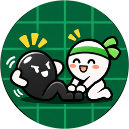

リバトレ
負けるほど、強くなる。
プレイモード
CPUの強さ
あなた（黒）
2
VS
CPU（白）
2
あなたの番です。石を置いてください
手数 0 / 最大60手● が置ける場所です
負けるほど、強くなる。対局を振り返ろう
✦ 強くなるヒントを見る
今回の一手を振り返ろう。
ルール・遊び方
黒が先手です。相手の石を縦・横・斜めに挟める場所をタップすると、挟んだ石が自分の色に変わります。石を置ける場所には小さな丸が表示されます。置ける場所がないときは自動でパス。両者とも置けなくなったら、石が多い方の勝ちです。
1人プレイでは、あなたが黒、CPUが白です。「1手戻す」で直前の自分の手からやり直せます。
RIBATORE TRAINING
打って、振り返って、強くなる。
角を取るだけでなく、相手に角の手前を打たせる展開まで。短い練習を積み重ねよう。
学習の進捗0 / 16
LESSON 1 / 8
理解度チェック0 / 8 習得
NEXT MOVE 1 / 8
● 小さな丸：置ける場所
解けた問題0 / 8
GAME REVIEW
「もったいない一手」を復習
実際の一手と別の候補を比較し、「相手にどう打たせるか」まで確認できます。赤は実際の手、黄色は打ち直し候補です。
まずは1局、最後まで対戦してみよう。対局結果がここに保存されます。
なぜこちらがよかった？
実際の手打ち直し候補緑：選んだ手順
※候補手は簡易評価によるものです。相手の応手は、実際の棋譜または説明用の一例で、最善手の保証ではありません。「強制」は相手の合法手が本当に1か所の場合だけ表示します。